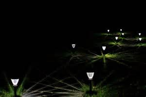
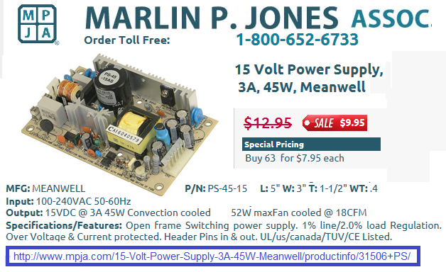

Climate Stewards of Greater Annapolis and Annapolis Friends meeting have received a donation of Solar panels from Bryan Murtha of the EV Associaiton of DC which we will make available to Youth camps and/or scout troops for the education of youth to clean, renewable Solar energy.
. . . . . .
See some of our Solar Projects:
Background: With the cost of solar now below even the price of coal, it is time to include some solar energy exposure in youth programs. Although the value promise of solar power is entirely driven by grid-tie applications where there is no need for battery storage, such systems require significant investment and operate at high voltage which are not suitable for the hands-on youth experience. Our own meeting house has gone grid-tie solar and 100% of our electric needs (not yet heating) is being provided by our solar array installed in 2013. Grid-tie Solar remains an excellent long term goal of our camps to invest in overall clean renewable solar electricity in the long run.
Use Directly for Solar Charging: The panels output as high as 100 VDC under no load which can be used directly for plugging in any modern devices including cell chargers that are rated at 100-240V as shown above. Whe producing max power, the voltage drops to around 70 volts, but every 100-240 V supply we have tested still runs all the way down to 60 volts just fine. Take care not to plug in anything with an old 60 Hz transformer in it as it wont work and might quickly burn out. See the outlet above at an undisclosed homeless encampment.
Camper Solar Experience: On the other hand, a good educational tool for kids is a small scale demonstration with battery storage for remote locations that do not have access to the grid. Operating at a low, safe 48 volts, the system suggested here can give campers hands on experience in capturing solar power, preparing it for distribution, delivering it over significant distances, and converting to userful power as shown in the above map and distribution diagram. For example, we've placed two of these Panels at the Friends Wilderness Center.
The solar panels are placed in a clearing with plenty of sun as shown above. A battery can be carried to and from the campsite daily or a single thin wire (with ground return) can be flung over tree limbs well above the height of hikers and deer, and can run hundreds of feet to the site. Either the 48v DC or 120V AC method can be used. We maintain a list of the groups shown at right, that have taken a panel and are working toward their camping systems.
Cost: The cost of the solar panels for this initative is nothing. The panels were donated by Bryan Murtha, a memeber of the Electric Vehicle Association of DC/MD when he upgraded his home solar system to newer panels. The cost of the power supplies are on the order of $10 or so and batteries if needed are easy to find.
Burning Propane/gas for lanterns is a bad idea: We were shocked when we compared the total fossil fuel energy burned in a Propane/gas lantern compared to the renewable-forever approach of using a solar recharged lantern. The graphic at right shows the 50-to-1 waste of fossil fuel for the same 1500 lumen illumination from an LED lantern which can be used nightly forever with solar power gained during the day. In addition, the fumes from the fossil fuel burning lantern are unhealthy and cannot be used in a tent or cabin..
Lantern Solar Power Conversion: Another nice youth project is the conversion of an obscene propane/gas lantern to LED lighting. There is plenty of room in the top shade to install several NiCd batteries and dozens of LEDs. Leds can be had by the hundreds for only a few dollars. See the addition of batteries to a Coleman Lantern. More Photos will be posted when the LEDs arrive.
Learning Objectives: A lesson plan would be prepared to provide some background in solar as much as is needed to provide a modern day understanding of the solid economics of clean renewable solar power for the home and everywhere else that has sun. The lesson would be scaled for the age and approrpiatness of the group. But in particular, these items would be covered:
USB Power and the Camping Integration Challenge: The challenge in using solar power in the camp setting is to demonstrate usefulness and practiciality while not infringing on the outdoor wilderness camping experience nor letting modern electronics distractions get its nose into the tent. In this sense, one idea is to limit the use of the 5 volt USB power to only a single very lowpower solar lamp per cabin such as from a set shown below and maybe one on the porch. The camp conselor of course can also use a USB port to charge his/her emergency cell phone. In addition, many small portable flashlights shown below now come with USB charging capability and so campers could leave their flashlights on the USB charger when not in use. It is easy to find multiple USB distribution boxes at flea markets such as shown here to prepare for this future of solar power in camp.
But the number one argument for this system is if it replaces the absurdly wasteful century old gas or propane lighting noted above.
Solar Panels: The typical 3'x5' home solar panel produces 250 Watts at about 30 volts. These kinds of panels can be used directly in this project but they cost more than $200 each and are way more power than is needed. Fortunately, for this project, we have received a donation of several smaller old 40 watt panels (top right). These panels output at a higher voltage which we can reduce to a safe 48 volts using simple laptop type power supplies as shown in my hand in the photo. For details on the solar panels, See spec sheets.
Distribution Options: There is a variety of ways to use these panels depending on the particular application. Either the battery can be charged at the solar panel and carried to camp daily, or a single wire system can be used to run hookup wire over hundreds of feet at a safe 48 volts where it is then downconverted to a small nighttime 12v battery to provide useful battery power or USB power as shown. There is significant loss in the wire and ground return, but since the power is distributed at 48 volts the loss is only 5% compared to trying to deliver it at 12 volts over the same wire. Assuming typical ground and wire resistance we expect about 15 Watts of power delivered to the cabins down deep in the woods. For these 40W panels, a 20 amp-hour battery is about right for one day's solar storage.
There are arrangements that are safe for kids and others that should be adult-only depending on the power supply used.
Power Supplies:The power supply is needed to get the solar panel voltage down to the 13.8 volts needed to charge the battery. The easiest supplies to find are Laptop supplies that are self contained and mostly weather proof. Every such "laptop" powersupply we tested (universal input 100-240 VAC) worked just fine down to the 72 volt peak power point of these panels as long as the load on the power supply was less than the 40W rating of the solar panel (or incident sunlight). Only 1 supply was picky about which input prong was + or -. All the others didn't care. Here is the 48v sealed power supply for the 48v kid-safe system. Or an open frame one for the full 40 watts.
Trees = Shade = Distance = Moisture: The ground return only works well in moist earth with low resistance (10 ohms to 66 ohms in moist soils). Fortunately, if there are so many trees that you have to go long distance to find sun, then there is also moist soil for the trees! The table at right was prepared for our 48 volt panels to show the possible maximum power deliverable at 500 feet for each wire size. Notice that for any but the best soils, the wire size makes little difference. If you use a lower voltage 36v panel, cut these powers in half. But if you raise the voltage by two, you can quadruple the power but it becomes unsafe for kids.
Dry Soil = Bright Sun = Short Distance: The poor performance in dry soils is not all bad since trees also do not grow in dry soils. So in dry areas, there is less shade and the solar panel can be much closer to camp if not within a few feet using two conductor wire delivering much more power. The only place you need to use ground-return is where trees are so plentiful that you have to go hundreds of feet to find a clearing. And those areas have moist soils!
OOPS, not so fast...: Our installation at the Friends Wilderness Center in West Va turns out to have rocky soil with resistance of nearly 1000 ohms so we had to abandon the SWER approach and move the panels to the cabin. But even in the shade there was enough sun to deliver about 8% of full sun, and for a few minutes a day, the panel would get full sun. The result was that for a week of charging, the cabin lights could be used for about 4 hours a weekend.
CAPACITY: If the goal is only to provide a single modest garden solar lamp per cabin then a single panel could probably power dozens of cabins. For Scout troops, one panel could also provide all the bright nighttime lighting needs of a campsite. A typical high-output electric lantern shown here uses about 10 Watts (for a 100W equivalent CFL bulb). It would need about 60 Whrs for a typical winter evening (6 hours) and this can recharged in about 1.5 hours of sun from a 40W panel. Or, for a typical 6 hour solar day, one 40W panel could recharge 4 of these lamps.
We found that 1.8 Ahr NiCd's are about 1/4" longer than 2 D-cells, but with the spring contacts of the lantern would fit OK. We mounted a charging connector and soldered wires to the + end of one battery string and the - of another. Then inserted them to make the right contacts after wrapping some cardboard around the cells to fit without rattling around. This provides over 16v fully charged, but we noticed that the DC/DC converter powering the CFL bulb ghe current actually began to go down above 13 volts (from about 900 mA down to about 800 mA at 16v). We could have left out two cells, but this gives us slightly more run time (about 3 hours on low). D cells would have lasted 4 times longer but I didnt have any at the time of this conversion.
The 16" square solar panel in the background is a 20W panel and can fully recharge two of these lanterns during 6 hours of sunshine.
If Garden type walkway low level lights are used that only need about 0.2 Watts, the 40w panel could supply 200 of these lamps per night.
Camp Lighting Issues?: ... Although this smacks of unwanted moderninity in the campground, one could argue that there is nothing more distracting and far from the peaceful night at camp than a bunch of kids (or adults) clambering down a dark trail each with blazing flashlights zinging all over the place and into the eyes. At many camps we try to use night vision and just see by moon or starlight. But one person with a flashlight can destroy it. In that sense, low level trail "moon" lighting can be a more palatable natural approach to camp trails between the messhall and campsites.
 Trail Moonlighting? Considering the distraction of flashlights, it can be fun and educational to string tiny LED path lights over these most frequently used trails, if nothing else, than to cut down on all the flashlights! These lights can be assembled by the kids as a project as part of the learning experience with the goal to replicate moonlight, not in the typical overlit garden every 5 feet as shown to the far right, but very widely spaced, and hanging from above to provide dim, but sufficient "moon"light to avoid stumbling but not so much as to lose night vision.
When done tastefully, this is far more peaceful and far less distracting than bright flashlights. In fact, I'd use red LED's which preserve full night vision. These are about 50 cents a piece and you can string 30 of them from each single wire from the 48v source. Maintaining them with no tools is easy. Just twist the leads to the wire. and twist together any breaks. Good experience for any camper.
We welcome additional ideas for non invasive use of 12 and 5v power in the camping environment.
SCOUTING: We also might have some of these solar panels available to other local Maryland camps or Scout troops that want to include a solar panel in their camps. The panels were donated to our Church and so we will be happy to consider donating them to local girl or boy scout troops interested in teaching solar energy or supporting their outdoor skills such as the Boy Scout Energy and Electricity Merit Badges or Girl Scout Brownie DIY, or Junior Outdoor, or Senior Adventure badges.
Submit an Application for a Solar Panel: We want to make sure these panels will actually get out into the field and be used and not just stowed away in a trailer or closet, so we will review applications for these panels to evaluate each troop's project. Just send an application to the email below and describe how you think you will used this panel.. Full power lights (like the light from Lanterns) or subdued LED garden lights for each scout, or just out in a field to charge batteries and then bring the batteries back to camp at night. etc...
The primary goal of these panels are for hands on experience with the scouts and scouters. We want them to provide high visibility to solar. IE, we do not want these mounted out of sight on top of a troop trailer. Either make them very portable as shown here at Klondike 2016 or mount them on the side of the trailer with a removable pin hinge so they can be moved to any side of the trailer and at any angle. Decide on Voltage. Use the low voltage 48v for hands on scout education and long distance wire runs where the panel is placed in a clearing. The first thing you will need to do is to make a plywood front/back to protect the panel during handling.
Our First Experience: We took two panels to Four Rivers District Klondike Derby at Kinder Park (central Maryland) and connected up an array of CFL bulbs and a variety of wiring configurations to evaluate the system. Generally, 1000 to 1500 feet of wire were used. Here are some photos:
 Higher Power Option: Several of the above photos used higher voltage to reduce the current in the wire and ground system. Each time you double the voltage, you reduce the current by two and you decrease the lossses by four! The easiest way to get the higher voltage was to wire two of these panels in series to provide over 150v DC. This can run 10 times the distance compared to 48v over the same hookup wire, and can use almost any universal powersupply (100-240 VAC) directly but this then bcomes a shock hazard and must have careful adult supervision. Also it generates about 80 Watts of power which is extreme overkill for this application.
Putting together a System: First of all, build a wood frame to protect it and for carrying it easily. The one shown here also has two LED bulbs for demos, but would not be part of an actual system. Then decide how you are going to use this panel and how to configure a voltage system for your needs. Use this decision tree:
Bob Bruninga, WB4APR,
Annapolis Friends Meeting
mylastname @ usna dot edu
{kind=link}
{kind=link}
{kind=link}
{kind=link}
{kind=link}
{kind=link}
{kind=link}
{kind=link}
{kind=link}
{kind=link}
{kind=link}
{kind=link}
{kind=link}
{kind=link}
{kind=link}